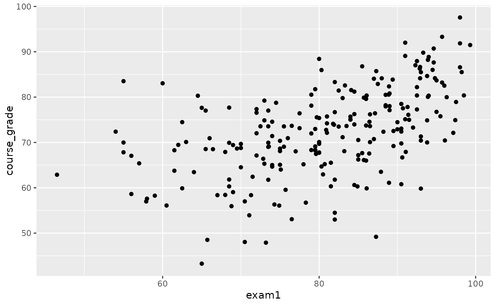

Grades on three exams and overall course grade for 233 students during several years for a statistics course at a university.
exam_gradesFormat
A data frame with 233 observations, each representing a student.
- semester
Semester when grades were recorded.
- sex
Sex of the student as recorded on the university registration system: Man or Woman.
- exam1
Exam 1 grade.
- exam2
Exam 2 grade.
- exam3
Exam 3 grade.
- course_grade
Overall course grade.
Examples
library(ggplot2)
library(dplyr)
# Course grade vs. each exam
ggplot(exam_grades, aes(x = exam1, y = course_grade)) +
geom_point()
#> Warning: Removed 1 rows containing missing values (geom_point).

 # Semester averages
exam_grades %>%
group_by(semester) %>%
summarise(across(exam1:course_grade, mean, na.rm = TRUE))
#> # A tibble: 6 x 5
#> semester exam1 exam2 exam3 course_grade
#> <chr> <dbl> <dbl> <dbl> <dbl>
#> 1 2000-1 73.8 76.2 76.8 72.3
#> 2 2000-2 75.5 71.2 68.0 70.6
#> 3 2001-1 87.0 75.1 78.1 76.7
#> 4 2001-2 82.9 67.5 67.2 69.0
#> 5 2002-1 82.1 76.3 84.9 72.3
#> 6 2003-1 85.7 67.8 77.1 72.3
# Semester averages
exam_grades %>%
group_by(semester) %>%
summarise(across(exam1:course_grade, mean, na.rm = TRUE))
#> # A tibble: 6 x 5
#> semester exam1 exam2 exam3 course_grade
#> <chr> <dbl> <dbl> <dbl> <dbl>
#> 1 2000-1 73.8 76.2 76.8 72.3
#> 2 2000-2 75.5 71.2 68.0 70.6
#> 3 2001-1 87.0 75.1 78.1 76.7
#> 4 2001-2 82.9 67.5 67.2 69.0
#> 5 2002-1 82.1 76.3 84.9 72.3
#> 6 2003-1 85.7 67.8 77.1 72.3